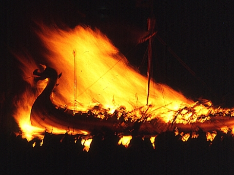
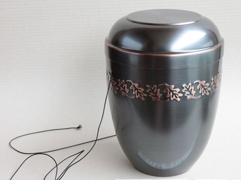
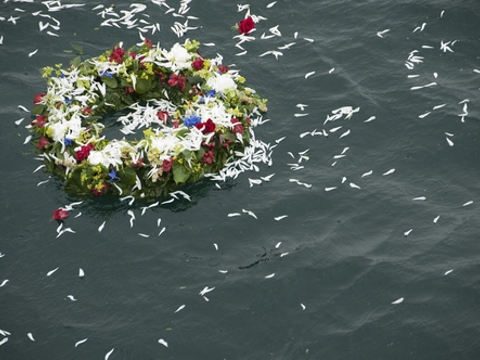

Sky Burial
Most often practiced in the Chinese provinces and autonomous regions of Tibet, Qinghai, Sichuan and Inner Mongolia, as well in Mongolia, Bhutan and parts of India. The creatures of nature, especially birds, will help you dispose of your remains in as generous a way as possible.
Viking Funeral
Pack your favorite earthly possessions onto the combustable watercraft of your choice! Your kin will fire flaming arrows until your craft is engulfed in flames. Laid down in your finest, you will sink to your final resting spot.
Burial
A traditional favorite, whether 'green', embalmed, or according to religious custom. Burial has been a prime mover of people into the Earth's crust.
Donate to Science
There are whole body donor programs that act as an alternative to traditional burials. Science will happily take your remains after you don’t need them anymore. Help craft safer automobiles or train the doctors of tomorrow!
Cremation
A practice that has existed throughout the human species for at least 20,000 years. Advantages are: cost and extreme portability! This option allows for the greatest flexibility of final disposition of remains. All of your loved ones can have a piece.
Attribution: Cremation Urn by Norbert Hüttisch, Karlsruhe
Space Burial
You don’t have to be a famous Sci-Fi creator to be interred in Earth’s orbit, but having a sizable bank account helps. Your contained cremated remains will be placed into orbit (via NASA or Space Contractor of choice) for endless journeys around the sun. 3-2-1 BLAST OFF!
Sea Burial
For lovers of water and all things aquatic, a burial at Sea is for you. Your earthly remains will be dropped into the ocean from a ship or boat for the scuba dive of your afterlife! You have a choice of vessel into the sea, whether that be in a casket, sailcloth, urn, or a scattering of your cremated ashes.